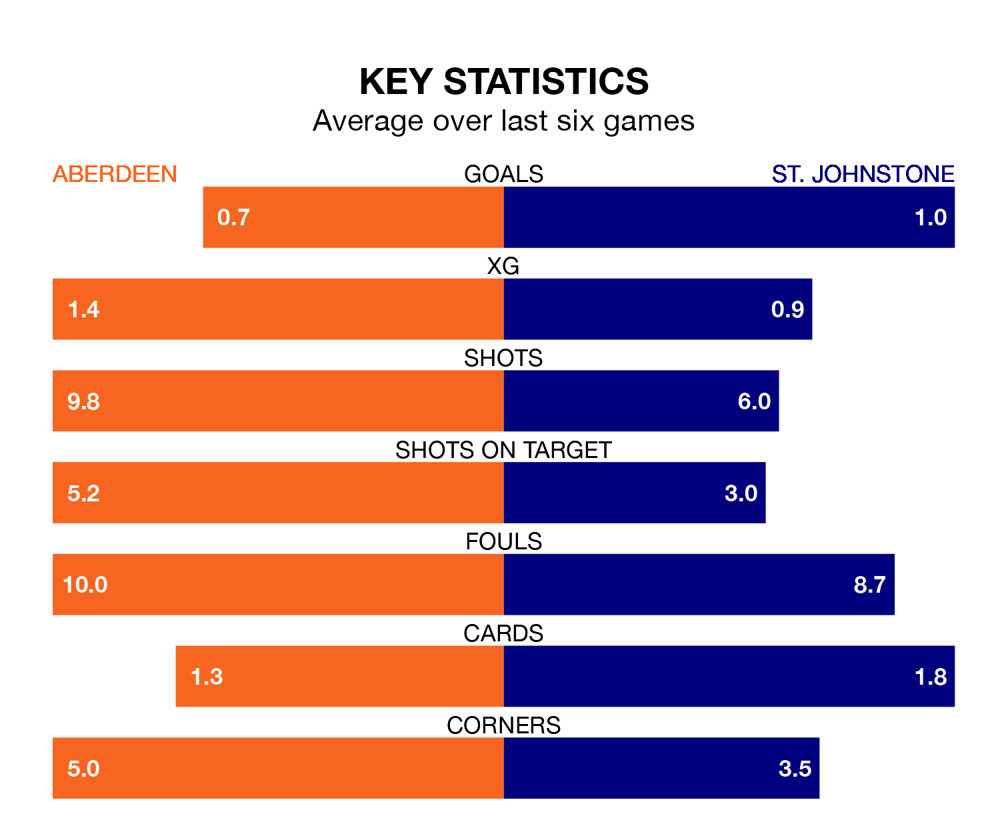

Aberdeen are heavy favourites to keep all three points at home in Saturday's kick-off against St. Johnstone.
Aberdeen, who sit eighth in the Premiership with 34 games played, are priced at 1.6 to seal victory at the Pittodrie Stadium.
Sitting two places and seven points behind them in the table, St. Johnstone are 5.0 to win with *Betting Company*, while the draw is at 3.6.
In the last 10 years, Aberdeen and St. Johnstone have played each other on 37 occasions. Aberdeen won 15 of them, St. Johnstone 10, and they drew 12 times.
On average, Aberdeen scored 1.1 goals and the Saints 0.9 in those matches.
Their last meeting was on February 28, when St. Johnstone won 2-0 away.
In Bojan Miovski, Aberdeen have one of the league's most on-form strikers so far this season. He has notched 14 goals in 34 appearances, to sit third in the scoring charts.
His goal rate of one every 212 minutes is slightly quicker than that of Nicholas Clark, St. Johnstone's top scorer with a goal every 173 minutes, and a total of six goals in 17 games.
The hosts are in reasonable form in the Premiership, with three wins and two draws from their last six games.
With a win and a draw over that period, the Saints' form is much worse – they have taken four points from 18, compared to Aberdeen's 11.
With 25 goals in 34 games so far this season, the away team are the league's second-lowest scorers with 0.7 goals per game. And they are conceding more than average, letting in 49 goals at a rate of 1.4 per game.
Aberdeen are also below average scorers, with 1.1 goals per game, compared to a league average of 1.3. They have conceded 1.4 goals per game.
Aberdeen's last match was on April 27, a 1-0 win against Motherwell, with Stefan Gartenmann getting the goal for Aberdeen.
St. Johnstone lost 3-1 against Hibernian last time out, also on April 27, with Benjamin Mbunga-Kimpioka on the scoresheet.
Updated: 10:44 (UTC), 30/04/24